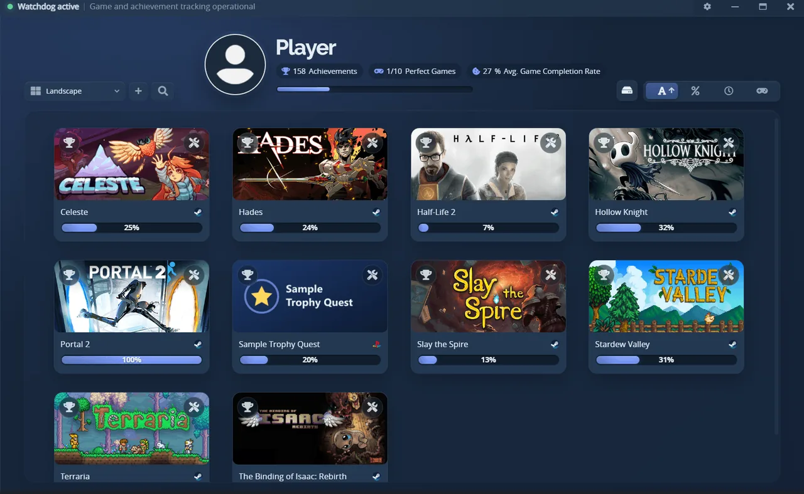
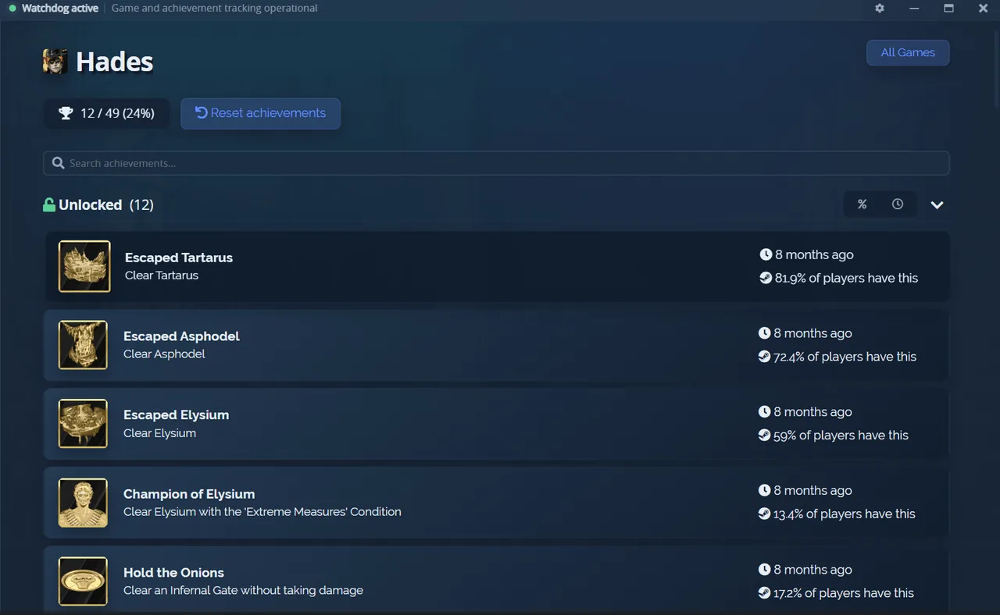
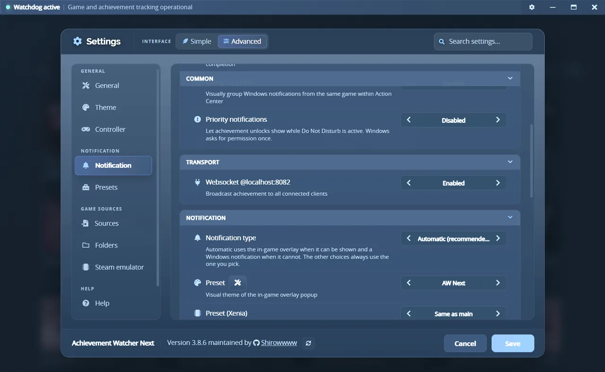
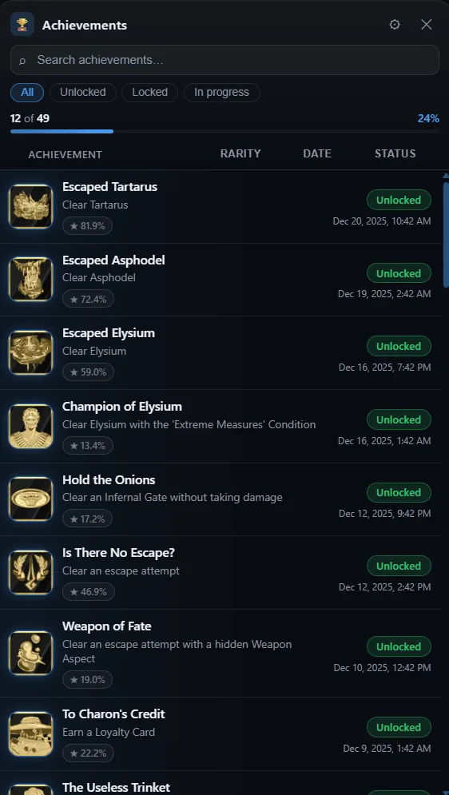
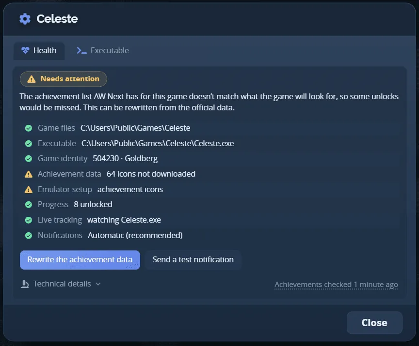

Windows 10 and 11
Every achievement. One experience.
Steam, GOG, Epic, Ubisoft, EA, Xbox PC, local emulator saves and RPCS3, ShadPS4 or Xenia end up in one library, watched by one background service. When something unlocks you get an overlay popup over the game, or a Windows notification if the overlay cannot be seen.
Latest release on GitHub LGPL-3.0, no account, no API key

That popup is not a picture. It is the preset the app ships, running here.
- 8source families
- 28interface languages
- 9bundled presets
- 0API keys to enter
One library
Games from every enabled source in one list, with their unlock history, rarity tiers, progress achievements and cover art. Six views, from large cards to a dense table with playtime and last session.
- Search and filter by source, completion or recent activity
- Missing artwork is fetched from Steam's CDN, then SteamGridDB
- Everything is cached, so the list still opens offline

Two ways to be told
On Automatic, each unlock takes the transport that can actually be seen: the overlay while you play, a Windows notification in exclusive fullscreen or when the overlay reports a failure. Never both at once.
| Overlay popup | Drawn over the game. Styled by the preset you pick, with its own sound. |
|---|---|
| Windows notification | The system toast, with the game icon and the achievement art. |
| Automatic | Picks between them per unlock, and remembers what worked for that game. |

The full list, in game
The running game's achievements come up over it: search, filters, rarity badges, hidden descriptions on demand. A gamepad drives all of it, including the app itself.

When a game is not tracked
Game Health says which source the game came from, what was found on disk, and what is missing. Where a
local setup is broken it offers the repair that applies to that case, and only that one: a
steam_settings fix, a matched GBE Fork runtime, an architecture-safe Uplay R2 repair. Every
write is confirmed first and backed up.

Sources
Each one is a switch in Settings. Achievement lists come from public endpoints and are cached on disk, which is why there is no Steam Web API key to paste anywhere.
Reading achievements never writes anything. The emulator repair tools do change game files, after a confirmation and with a backup. Use them only with games you own.
Presets
Nine designs ship with the app, and each one paints four states: a normal unlock, a rare one, 100% completion and a progress step. Pick one below, they are all running.
The default. The app's own palette, an accent rail down the left edge, a ringed icon and the game's name above the achievement.
Make your own
Settings has a designer: layout, type, colours, motion, the rare and completion treatments, a per-preset sound. No CSS and no JSON, and the preview is the real popup rather than an approximation of it. Fourteen starting points, or roll one with Surprise me.
Share it, or take one
Export writes one .awpreset file with the style, the images, the fonts and the designer
settings, and nothing from your machine. The gallery is where people put theirs. Themes made in Steam
Achievement Notifier can be converted on import.
Getting it running
-
Install it
Achievement.Watcher.Setup.exefrom the releases page. Nowhere else publishes it. - Run Smart Find Settings, then Folders. Add any game or save folder it could not guess.
- Leave it in the tray That is the watcher. Live notifications and playtime depend on it running.
Settings and data live in %APPDATA%\Achievement Watcher Next. An upgrade keeps them, and the
first launch imports an older Achievement Watcher folder without modifying it.
Documentation
Written for the version that is out. The in-app Help tab is the same material, translated, and it reflects your actual configuration.